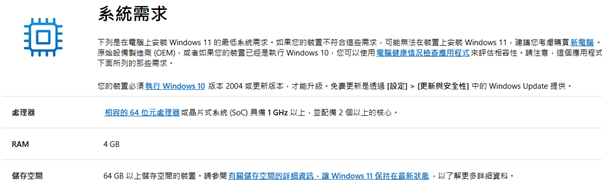
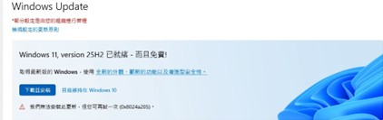
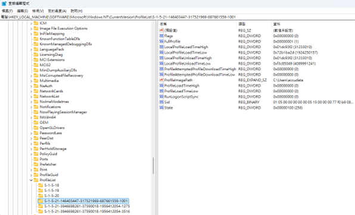
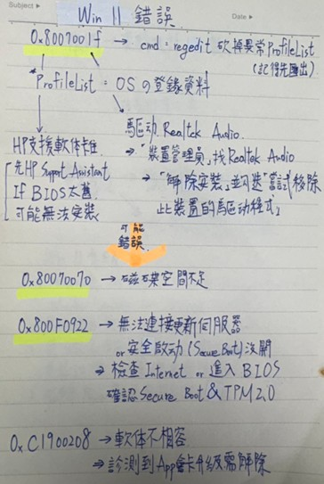
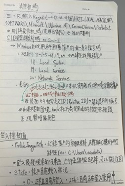
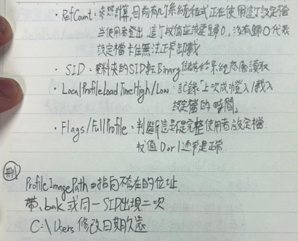
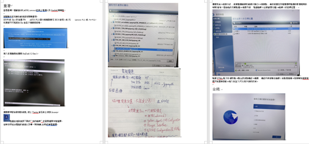
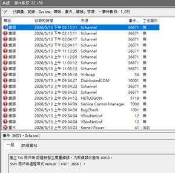
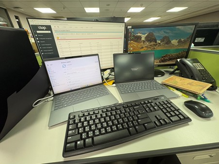

主要熟悉「報修管理中心」的操作規範與維護 SOP，建立標準化的維修思維，學習執行筆記型電腦與桌上型主機的硬體擴充（含記憶體安裝），並確認硬體在 BIOS 中正確識別。
升級前環境預檢：Windows 11 對硬體安全性有嚴格要求，需提前確認使用者的電腦是否符合規格（TPM 2.0、Secure Boot）以及 C 槽空間是否足夠。

升級執行與錯誤排除：當 Windows Update 出現錯誤導致無法連線至更新伺服器時，執行排錯程序，包含重設 Windows Update 組件與檢查網際網路連線能力。最常出現的問題是電腦有過去使用者留下的機碼導致無法更新，需要刪除這些機碼。





針對報廢回收再利用、效能嚴重衰退的舊型設備執行系統重灌，過程分成四大步驟，並製作了一份標準 SOP 提供其他人使用：

為應對 Windows 11 對記憶體的需求，執行硬體擴充與穩定性測試。安裝前確保靜電防護（ESD），安裝後確認金手指完全入位；加裝後透過「磁碟管理」工具檢視磁碟分割區配置，合理分配 C 槽空間。
sfc /scannow 進行系統檔案完整性檢查，並學習使用 DISM 工具修復損壞的系統映像檔。
本來以為 IT 維運就是換換零件、重灌系統，但實際接觸後發現只要系統出問題，第一時間就是找我們。在此期間也學到了很多「教科書上沒寫」的應變能力。
公司設備不是每台都像家用電腦一樣新，要升級 Win11 必須先確保系統規格及磁碟空間，並檢查有沒有「未知帳戶」的機碼在干預更新，確認這些底層設定都到位，否則系統升級到一半就會報錯。
以前遇到 Bug 總是無法解決，現在會先自己分析、截圖、找資料，真的解不開才帶著準備好的分析結果去問。這是一份適合喜歡解決問題後有成就感的人會感興趣的工作。
